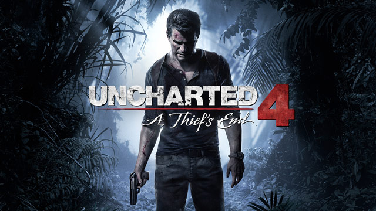
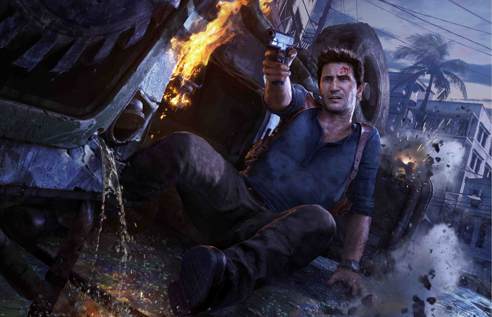

Uncharted är en spelserie ur tredjepersonsskjutargenren för Playstation 3 och Playstation 4, skapad och utvecklad av Naughty Dog och utgiven av Sony Computer Entertainment. Spelserien handlar om skattjägaren Nathan Drakes äventyr. Serien inleddes först med Uncharted: Drake's Fortune som kom ut 2007, uppföljarna Uncharted 2: Among Thieves och Uncharted 3: Drake's Deception släpptes under 2009 och 2011. Bend Studio har även utvecklat ett spel exklusivt till Playstation Vita, vid namn Uncharted: Golden Abyss. Utvecklarna har även skapat en tecknad serie, Uncharted: Eye of Indra, som finns att köpa i Playstation Store. En långfilm är också planerad. En fjärde uppföljare med titeln Uncharted 4: A Thief's End släpptes den tionde maj 2016 på Playstation 4.
Mitt favorit adventur (äventyr) spel

